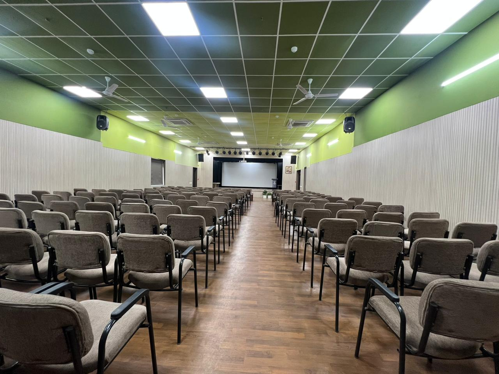
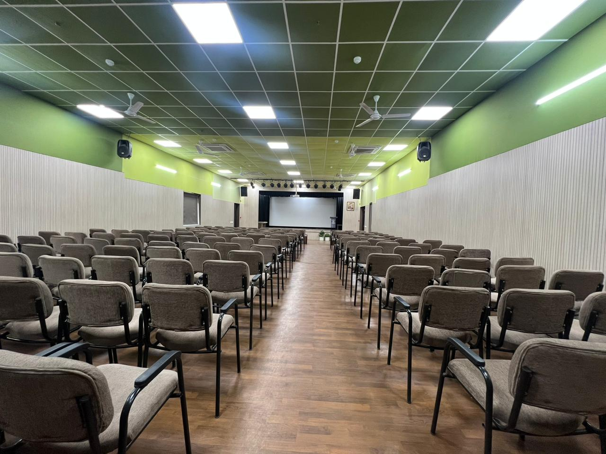

➼Dyal Singh Public School, Sector 7, panipat, is an educational institution that prides itself on its state-of-the-art infrastructure and commitment to nurturing well-rounded individuals. Spread over a vast area, the campus is equipped with a range of modern facilities aimed at promoting both academic excellence and personal growth.
➼The classrooms are spacious, well-lit, and technologically advanced, featuring interactive smart boards that enhance the learning experience. The school’s specialized laboratories for physics, chemistry, biology, and computer science provide students with opportunities for practical learning, fostering a deeper understanding of theoretical concepts. The library, with its wide collection of books, journals, and digital resources, encourages a love for reading and research.
➼For physical and mental development, the campus offers extensive sports facilities, including a large playground, basketball and badminton courts, a swimming pool, and a dedicated gymnasium. Regular sports events and competitions are held to engage students in physical fitness and teamwork.
➼The school places a strong emphasis on co-curricular activities, offering music rooms, dance studios, and art galleries, where students can explore their creative talents. It also hosts cultural events, debates, and competitions to promote leadership, public speaking, and confidence.
➼In terms of infrastructure, the campus is designed with eco-friendly features, including rainwater harvesting systems, green spaces, and waste management initiatives, fostering an environmentally conscious mindset among students. The school also prioritizes the safety and well-being of students, with a robust security system, a dedicated medical room, and a counselor for mental health support.
➼Overall, Dyal Singh Public School’s campus is a perfect blend of modernity, nature, and tradition, offering an environment where students can thrive academically, socially, and emotionally
 
